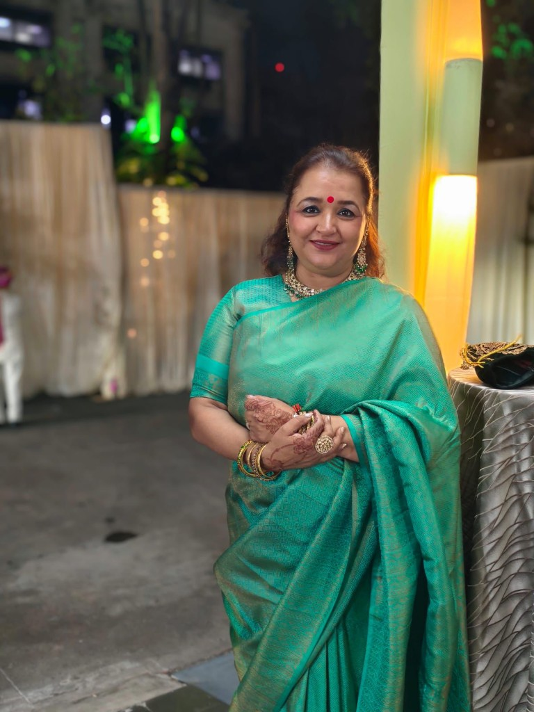

Environmental Leader · Community Changemaker · Woman of Substance
Transforming devotion into sustainability, activism into policy impact, and service into measurable societal change.
Rekha Sankhala is a transformational leader who bridges corporate strategy, environmental activism, and grassroots community service. With over two decades of experience in Organizational Development and Learning Solutions, she has held leadership positions with the Reliance ADA Group and NIS Sparta, managing national-level training deployments and corporate partnerships.
Her work reflects systems thinking — solving complex problems through collaboration, sustainability, and measurable impact. She leads with courage, compassion, and conviction, channeling personal adversity into transformative community action.
As a Woman of Substance Award recipient, Rekha exemplifies what purposeful leadership looks like — from boardrooms to waterfronts, from policy corridors to classrooms.
Maharashtra generates over 4,500 tonnes of Plaster of Paris waste annually during Ganesh Festival. Under Rekha's leadership, Rotary spearheaded Navi Mumbai's first scalable end-to-end circular model — transforming sacred waste into sustainable educational resources.
Rekha led a citizen movement that culminated in a historic victory at the National Green Tribunal — successfully preventing the auctioning of ecologically sensitive CRZ land in Nerul.
This land, rich with mangroves and flamingo habitats, was saved from commercial exploitation — a rare instance of citizen-led environmental justice protecting Navi Mumbai's biodiversity for future generations.
The judgment stands as a precedent and a testament to what informed, persistent civic action can achieve.
As President of the Rotary Club of Navi Mumbai Joy of Giving (RID 3142), Rekha has built a movement that turns compassion into action — across health, education, environment, and entrepreneurship.
Instrumental in forming and chartering new Rotary clubs, expanding the network of service across the region.
Led medical support and awareness campaigns for Thalassemia patients and families across Navi Mumbai.
Championed women's economic empowerment through training, mentorship, and community-enterprise programs.
Drove environmental programs blending scientific rigor with cultural sensitivity and community participation.
Promoted youth leadership development, creating pathways for the next generation of changemakers.
Built bridges between corporate social responsibility goals and grassroots community needs for lasting impact.
During a personal sabbatical while supporting her father through colon cancer, Rekha emerged stronger — channeling adversity into advocacy and community action. Her journey is a testament to resilience, purpose, and the power of leading from the heart.
Collaborations · Speaking Engagements · Partnerships